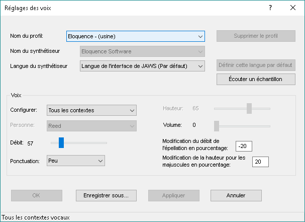
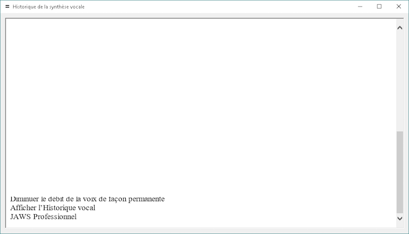
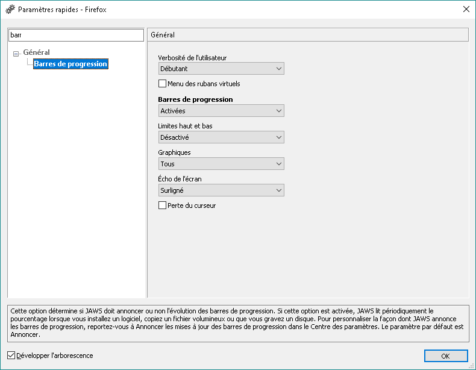
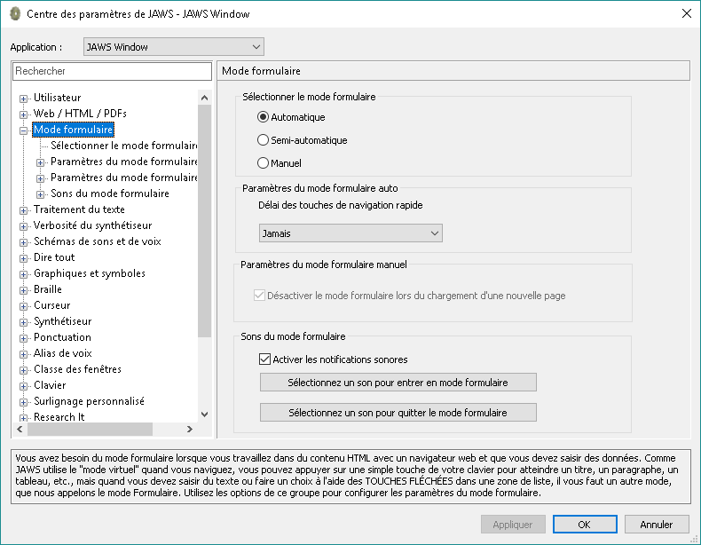

Configuration de JAWS pour l'évaluation
Synthèse vocale
Si vous n'appréciez pas la synthèse vocale proposée par défaut, il vous est possible de télécharger une synthèse vocale de meilleure qualité, Vocalizer expressive.
Pour la récupérer, il suffit d'aller dans le menu JAWS (en cliquant sur l'icône dans la barre d'état), ou en appuyant sur JAWS + j. Aller ensuite dans le menu, choisir « Aide », et sélectionner « Voix supplémentaires ». Vous trouverez un lien vers la liste des voix à télécharger.

Une fois que vous aurez téléchargé la synthèse vocale et sa voix française, vous pourrez changer la voix, en allant dans le menu JAWS, sélectionner « Options », « Voix, », « Réglage des voix », puis choisir Vocalizer expressive.
Il est également possible de définir la vitesse de lecture, la langue de la voix et la quantité d'informations à prononcer dans cette boîte de dialogue.
Il est aussi possible de dire à JAWS de prononcer tous les caractères, les caractères et les mots, juste les mots ou rien du tout en appuyant simultanément sur les touches JAWS + 2 du clavier alphanumérique.
Modifier la vitesse de lecture à la volée
Appuyer simultanément sur alt + Ctrl + page suivante pour diminuer la vitesse et alt + Ctrl + page précédente pour l'augmenter.
Historique vocal
Afin de mieux comprendre ce que dit JAWS, il vous est possible d'afficher les 50 derniers messages vocaux prononcés par JAWS, l'historique vocal.

Pour cela, appuyer simultanément sur JAWS + Espace, puis sur la touche h. Vous pourrez alors parcourir la liste des messages du plus récent au plus ancien.
Pour visualiser ce que prononce la synthèse, il est également possible d'afficher la « visionneuse de parole ».
Autres réglages de verbosité
En ce qui concerne la lecture de pages web, ces réglages se configurent en allant dans le navigateur, Internet Explorer ou Firefox, et en ouvrant la boîte de verbosité à l'aide des touches JAWS + v.

Une boîte de dialogue s'affiche, avec la liste des options que l'on peut modifier, classées par catégorie. Cette boîte de dialogue dispose aussi d'un moteur de recherche pour trouver l'option que l'on souhaite modifier.
Activer « barre de progression » à l'aide de la barre d'Espace, pour que JAWS vocalise la progression d'une barre, pour un téléchargement par exemple. Cela vous permettra de tester le composant « progressbar ».
Régler « graphiques », sur tous, à l'aide de la barre d'Espace, pour que JAWS vocalise toutes les images, même celles sans alternatives textuelles.
Dans la rubrique « lecture », activer à l'aide de la barre d'Espace le changement automatique de langue. Cela permettra d'évaluer si les changements de langue ont bien été signalés dans une page web.
Mode formulaire ou application
Il est possible de configurer JAWS pour qu'il active automatiquement le mode formulaire, ne l'active pas ou le fasse dans certaines conditions.
Pour modifier cette option, aller dans le « Centre des paramètres » en appuyant sur JAWS + tiret et rechercher « Mode formulaire ». Vous pouvez modifier l'option à l'aide de la touche Espace.

Par défaut, l'option « Automatique » est cochée, le mode formulaire s'activera dès que l'on arrivera sur un champ de formulaire à l'aide de la touche de tabulation ou des flèches de direction. Il est plus simple de garder cette option par défaut pour votre évaluation.
Si, néanmoins, vous souhaitez activer ce mode vous-même, il faut cocher « Manuel ». Il vous sera alors nécessaire d'appuyer sur la touche Entrée pour passer en mode formulaire.
Une troisième possibilité est d'utiliser le mode formulaire semi-automatique. Dans ce cas, le mode formulaire ne s'activera que lorsque vous atteindrez un champ de formulaire avec la tabulation. Si vous utilisez les flèches, il faudra activer ce mode manuellement à l'aide de la touche Entrée.
Dans les 2 cas, vous pouvez quitter le mode formulaire en appuyant sur la touche Échap.